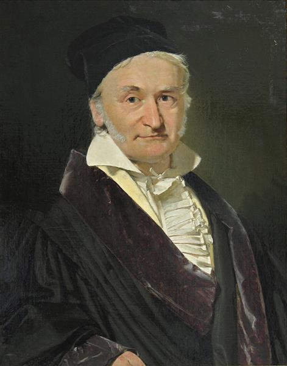
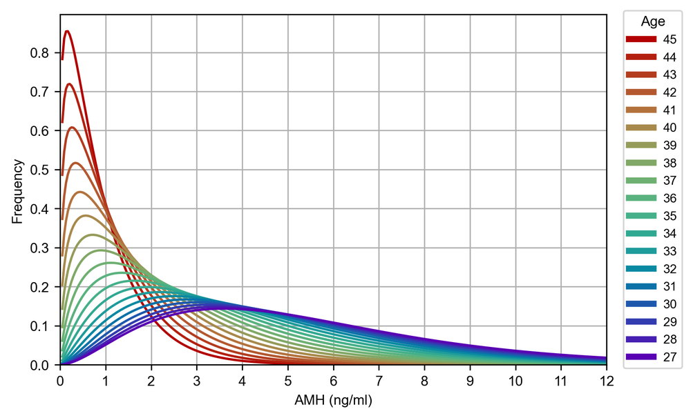

統計学において、最も広く知られ、最も頻繁に用いられている分布は正規分布（ガウス分布）でしょう。バイオサイエンスや医療統計の分野でも、データを「平均値 ± 標準偏差」で表現することは
日常的に行われています。中心極限定理により、独立したランダム変数の和は、分布の形に関わらず正規分布へと近づきます。例えば、矩形波の畳み込み積分を無限回繰り返すとガウス分布に収束することが
知られています。この強力な性質のため、正規分布はあらゆる分布の「最終形」のように見えることがあります。その結果、多くの研究で「とりあえず正規分布を仮定する」というアプローチが無意識のうちに
採用されてきました。
しかし、実際の観測データを詳細に検討すると、正規分布とは大きく異なる形状を示す分布も数多く存在します。例えば、値はゼロ以上のみを取り、低い値付近にピークがあり、高い値側に長い減衰尾部を持つ
分布は、生物学、医学、経済学、工学など、さまざまな分野で観察されます。このような非負かつ右に歪んだ連続分布は、統計学的にはガンマ分布によって自然に記述することが可能です。
この観点から見ると、非負連続量の記述においては、ガンマ分布がより自然な選択となる場面は決して少なくありません。しかしながら、統計教育や実務の現場では、正規分布の認知度と使用頻度が圧倒的に高く、
ガンマ分布はそれに比べて十分に意識されているとは言い難いのが現状です。そこで本稿では、正規分布と比較しながら、ガンマ分布の性質とその意義を再検討することを目的とします。
1. 歴史的背景
正規分布とガンマ分布の背後には、数学史における二人の巨人が関わっています。
正規分布は、ドイツの数学者 Carl Friedrich Gauss (1777-1855) によって、天文学的観測誤差の解析の中で体系化されました。観測値のばらつきを説明するために導入されたこの分布は、
のちに「誤差分布」の標準形となり、中心極限定理と結びつくことで、自然界に普遍的な形を持つかのような地位を確立しました。
一方、ガンマ分布の基礎となる「ガンマ関数」は、スイスの数学者 Leonhard Euler (1707-1783) によって18世紀に導入されました。ガンマ関数は、本来は整数に対してのみ定義される階乗を、
実数の世界へ拡張した関数として生まれましたが、その後、待ち時間分布や確率過程の解析に応用され、19世紀後半にガンマ分布として体系化されました。

2. 分布関数の形状比較
文章による説明や数式による表現も重要ですが、分布の違いは実際にグラフとして可視化することで、より直感的に理解できる場合があります。とりわけ、正規分布とガンマ分布の違いは、 形状を比較することで一目瞭然となります。そこで、以下に両者の確率密度関数のグラフを示します。


正規分布の対称性はどこか美しく感じられます。一方で、ガンマ分布の非対称な形状は、直感的にはやや違和感を覚えるかもしれません。そのため、私たちは無意識のうちに対称性を好み、正規分布を
「標準的な形」として受け入れてきたのかもしれません。
グラフに示した通り、ガウス分布では平均値 (Mean)・中央値 (Median)・最頻値 (Mode)は完全に一致します。一方、ガンマ分布ではこれらの値は一致せず、一般に最頻値 < 中央値 < 平均値の順に
大きくなります。
正規分布の図には、標準偏差の範囲を示しました。薄紫色の背景で示された区間が「平均値 ± 標準偏差」に対応する範囲です。正規分布において、この範囲には全体の約 68.3% のデータが含まれます。
具体的には、下位は 15.9%点、上位は 84.1%点 に相当します。
ここで興味深い疑問が生じます。なぜ私たちは、下位5%や上位5%、あるいは95%区間のような切りの良い数値ではなく、このような「中途半端」に見える 68.3% という範囲を日常的に用いているのでしょうか。
実はこの値は、確率的に特別な意味を持つ数ではなく、純粋に正規分布の数式に現れる「標準偏差」というパラメータから自動的に導かれる結果に過ぎません。
標準偏差は、正規分布の形状を決定する数学的パラメータであり、その分布構造の内部から自然に生まれる量です。しかし私たちは、その数式上の構造を意識することなく、\( \pm \sigma \)
という区間を当然のように日常で使用してきました。
2. 分布関数の形状比較
前項で示した通り、標準偏差 \( \sigma \) は正規分布の形状を決定する数学的パラメータであり、確率密度関数は次のように表されます。
数式に抵抗を感じる人にとっては、この式は複雑に見えるかもしれません。しかし実際には、正規分布は平均値 \( \mu \) と標準偏差 \( \sigma \) という、すでに馴染みのある二つのパラメータだけで
その形状が完全に決定されます。
同様に、ガンマ分布も二つのパラメータによって定義されます。すなわち、形状パラメータ \( \alpha \) とスケールパラメータ \( \beta \) です。
この式を見ると、正規分布よりもさらに複雑に感じられるかもしれません。特に式の中に現れる \( \Gamma(\alpha) \)（ガンマ関数）は、前述のとおりオイラーによって導入された関数であり、
階乗を実数へ拡張したものです。このような数式上の構造の複雑さが、ガンマ分布が正規分布ほど広く普及していない一因である可能性があります。
さらに、形状パラメータ \( \alpha \) とスケールパラメータ \( \beta \) は、標準偏差 \( \sigma \) のように直感的な意味がすぐに伝わる量ではありません。
このパラメータの分かりにくさも、ガンマ分布の普及を妨げてきた要因の一つかもしれません。
しかし、実は \( \alpha \) と \( \beta \) は平均値と最頻値という身近な指標から決定されます。ガンマ分布の平均値は、\(mean = \alpha \beta \)で与えられ、最頻値は、
\(mode = (\alpha - 1)\beta \)で与えられます。言い換えれば、分布のピーク（最頻値）と平均値さえ分かれば、ガンマ分布の形状は一意に定まります。
したがって、スプレッドシートなどの汎用的な数値計算ソフトウェアにおいて、\( \alpha \) と \( \beta \) を直接入力するのではなく、平均値と最頻値を入力する形式にすれば、
より直感的に扱えるようになり、ガンマ分布の利用は広がるかもしれません。
私たちの生活に直結する年収の分布も、低い側にピークを持ち、高い側に長い減衰尾部を持つ形状を示します。このような分布では、平均値が多くの人の実感とかけ離れた値になることがあり、
「中央値の方が実態を反映している」という議論が生じます。
ガンマ分布では、最頻値と平均値の関係そのものが分布の形状を規定します。正規分布において「平均値 \(\pm\) 標準偏差」という記述が一般化しているように、
ガンマ分布においても「最頻値（平均値）」のような表現を標準化すれば、非対称な分布をより自然に理解できるようになるかもしれません。
3. ガンマ分布の汎用性
この項では、いくつかの代表的な分布を紹介しながら、ガンマ分布の汎用性について議論します。
3.1 \( \chi \)二乗分布
バイオサイエンスや医療分野において、\( \chi^2 \) 検定は頻繁に用いられます。その理論的基盤となっているのが \( \chi^2 \) 分布です。
実は、この \( \chi^2 \) 分布はガンマ分布の特殊な場合にほかなりません。
自由度を \( k \) とすると、ガンマ分布において\( \alpha = k/2 \), \( \beta = 2 \)としたときの特殊形が \( \chi^2 \) 分布に一致します。
さらに重要な点として、自由度 \( k \) が大きくなるにつれて、\( \chi^2 \) 分布は次第に左右対称に近づき、正規分布に近似されます。これは中心極限定理に基づく性質であり、 形状パラメータ \( \alpha \) が大きくなる極限において、ガンマ分布は正規分布へと漸近します。 したがって、\( \chi^2 \) 分布はガンマ分布の「特殊形」、正規分布はガンマ分布の「極限形」として位置づけることができます。
3.2 女性の生殖年齢における抗ミュラー管ホルモン(AMH)分布私たちは、「女性の生殖年齢における抗ミュラー管ホルモン(AMH)の分布はガンマ分布に従う」と仮定し、数理モデル化を試みました(Reference参照)。 生殖年齢におけるAMHは、閉経に向けて加齢とともに減少していくことが広く知られています。しかしながら、年収分布の議論と同様に、同年齢集団におけるAMHの分布は、低い側にピークを持ち、 高い側に長い尾部を持つ非対称な形状を示します。そのため、AMHの平均値を基準として解析を進めると、患者が実際に感じている自身の位置づけとの間に乖離が生じるという問題がありました。 そこで私たちは、約7,000名のデータを用いて、ガンマ分布関数をモデル関数とした二次元重み付き非線形最小二乗回帰を行い、AMH分布の数理モデル化を試みました。 以下に27歳から45歳のAMH分布結果を示します。

従来は平均値と標準偏差によって表現されることの多かったAMH分布も、ガンマ分布を用いることによって、実態に即した非対称な分布構造をより適切に記述することが可能となりました。
3.3 ボーアモデルにおける水素原子の電子の第一軌道
1999年にノーベル物理学賞を受賞した Gerard't Hooft は、量子力学の基礎について、「今日一般に量子力学と呼ばれているものは、実質的には確率・統計的な記述の枠組みにすぎない」といった趣旨の発言を
しています。本稿でこれまで示してきた例は医療分野への応用でしたが、統計解析を日常的に用いる医学と、ミクロの世界を扱う理論物理学が、
「確率」や「分布」という共通の言語によって結びついているという点は、非常に興味深い事実です。
1913年、Niels Bohr は水素原子モデルを提唱し、水素原子における電子の第一軌道半径を理論的に導きました。この成果は原子構造の理解に革命をもたらし、
彼は1922年にノーベル物理学賞を受賞しました。ボーアは、電子が原子核のまわりを円運動すると仮定し、クーロン力と向心力の釣り合い、さらに角運動量の量子化条件
を用いることで、第一軌道（\( n = 1 \)）の半径を導きました。その結果得られる半径は次式で与えられます。
であり、これがボーア半径と呼ばれる量です。しかし1926年、Max Born は、水素原子における電子の位置は観測されるまでは確率的にしか記述できないとする解釈を提唱しました。
すなわち、波動関数そのものではなく、その絶対値二乗\( |\psi|^2 \)が存在確率を与えるという考え方です。
この確率解釈は量子力学の基礎となりましたが、Albert Einstein はこれに強く異議を唱え、「God does not play dice」と述べました。こうして量子力学の本質をめぐる大きな論争が生まれました。
水素原子における電子の第一軌道（基底状態）の波動関数は、シュレーディンガー方程式を解くことで導かれます。その解のうち、主量子数 \( n = 1 \)、角運動量量子数 \( l = 0 \)
の状態に対応する波動関数は、以下のように与えられます。
ここで \( r_B \) はボーア半径です。波動関数そのものは観測可能な量ではありませんが、その絶対値二乗
が、電子が距離 \( r \) に存在する確率密度を与えます。さらに、空間が三次元であることを考慮すると、実際に距離 \( r \) に電子が存在する確率分布は、 体積要素 \( 4\pi r^2 \, dr \) を掛け合わせることで
となります。これは、\( \alpha = 3 \), \( \beta = r_B/2 \) としたときのガンマ分布と完全に一致します。
つまり、水素原子における電子の存在確率さえも、ガンマ分布型の関数で記述されているということになります。
ここで重要なのは、ボーア半径 \( r_B \) が、この確率分布のピーク、すなわちガンマ分布の最頻値に一致しているという事実です。一方で、この分布の平均値は\( (3/2) r_B \)
となり、最頻値よりも大きな値をとります。以下に水素原子における電子の存在確率分布のグラフを示します。
すなわち、水素原子における電子の最も存在確率が高い距離は\( r_B \) であるにもかかわらず、平均値はそれより外側に位置します。
これは、分布が右側に長い尾を持つ非対称形状であることに起因しています。
この事実は、確率分布がガンマ分布型である場合、平均値よりも最頻値の方が、より直感的で物理的意味を持つ代表値となる可能性があることを示唆しています。
あとがき
本稿では、ガンマ分布を手がかりに、医学と物理学の接点について考察してきました。もし「量子力学とは確率・統計的な記述の枠組みにすぎない」とするならば、
生殖医療における出生率や AMH 分布のような確率現象にも、量子力学的アナロジーが通用するのではないでしょうか。
実際に、私たち夫婦は生殖補助医療によって第二子を授かりました。統計解析を職業とする私に対し、妻は「私は統計なんて信じない。自分に子どもが授かれば100%だし、授からなければ0%なんだから」
と言いました。確率分布として存在していたはずの可能性が、「観測」された瞬間に 100% か 0% へと収束する。前記の AMH 分布も同様です。
はじめは確率分布として存在しますが、測定結果が得られた瞬間に、その測定値の一点へと収束します。それは、数学的にはデルタ関数的な振る舞いと言えるでしょう。
そして測定を繰り返せば、再び元のガンマ分布が再構成されます。この構造は、量子力学における波動関数の収縮と類比的に理解することも可能かもしれません。
量子力学の世界では、「ミクロの世界では私たちの常識を超えた現象が起こる」と語られます。しかし、人間社会というマクロの世界においても、本質的には同型の構造が存在しているのではないでしょうか。
そもそも統計とは、全体としては確率分布という法則性を持ちながら、個々の事象においてはランダムかつ自由な多様性を内包する、二面性をもった枠組みなのかもしれません。
Reference
※ 本ページは理論の入口としての要約です。詳細な数理モデルおよび統計解析手法については、下記文献をご参照ください。